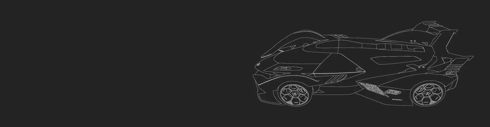

Lamborghini V 12 Vision
Configuración para una escena renderizada
MatCap
Con esta opción puedes generar una ilustacion en grises.

Colores Random
Blender te permite asignar un color a cada geometría